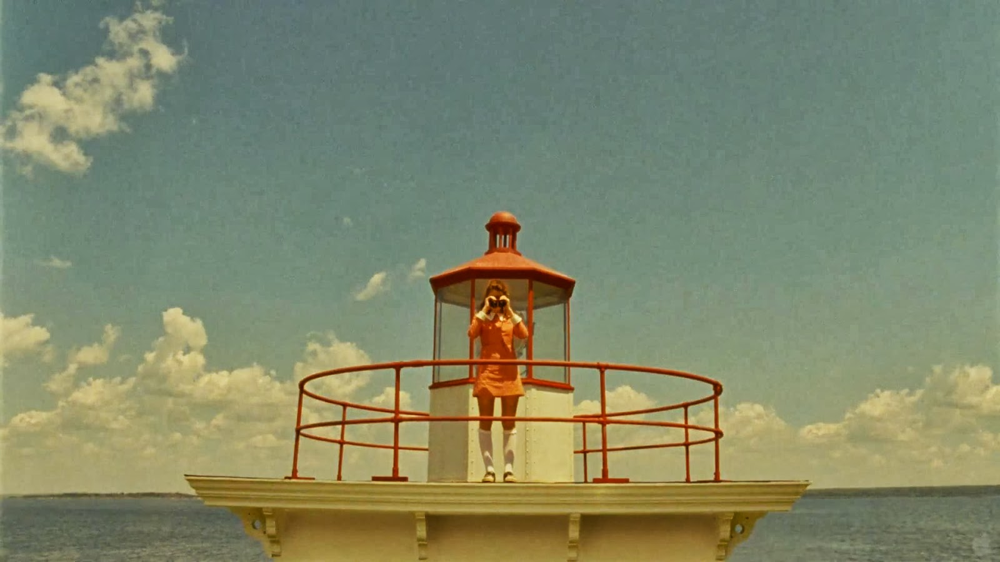
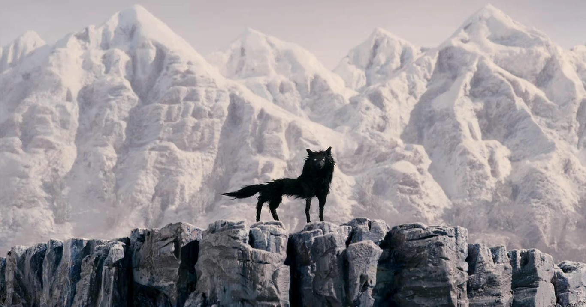

Wes Anderson is a type. He is a geometric sans serif. With Anderson's films prizing the Academy Awards for Best Production Design, it comes to no surprise that the filmmaer exemplifies a carefully curated, symmetrical, and cute typeface. Apparent in all of Anderson's films, the art direction is impressive. Unique aspect ratio, saturated color palette, and inventive costumes aren't simply additions to the story, they are hallmarks of a Wes Anderson production. The director's attention to detail and order is what pairs him to the geometric sans serif classification.
 Type classified as geometric sans serif are shapes made up of geometrical shapes, with even contrast and weight in all of its strokes. Split a Baohaus letter in half down the middle and you'll have the same shape that mirrors each other. This is how Wes Anderson directs his art; in perfect symmetry, alliance, and level. His frames always respect the Rule of Thirds. These invisible guidelines matter greatly to him. Consequently, viewers feel a sense of order. Every character and prop is in its designated mark.
Read more about Wes Anderson's production design here!